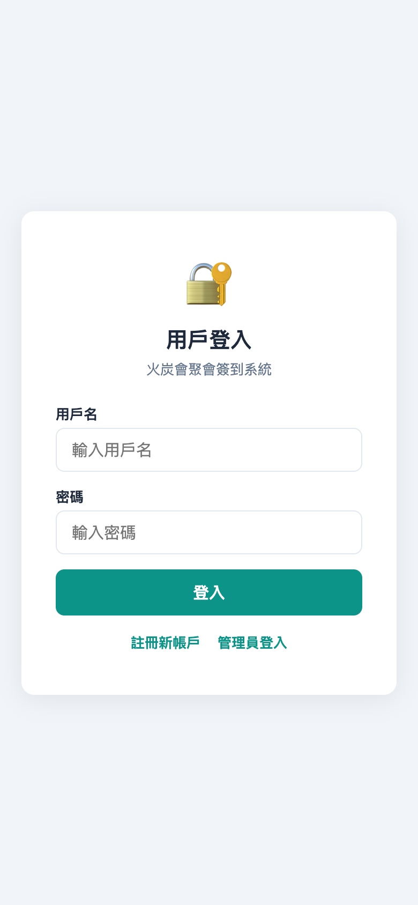
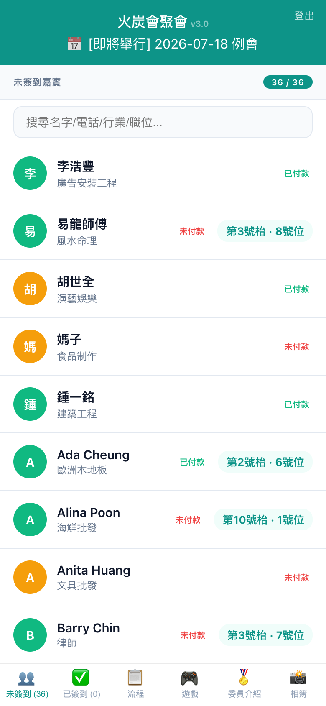
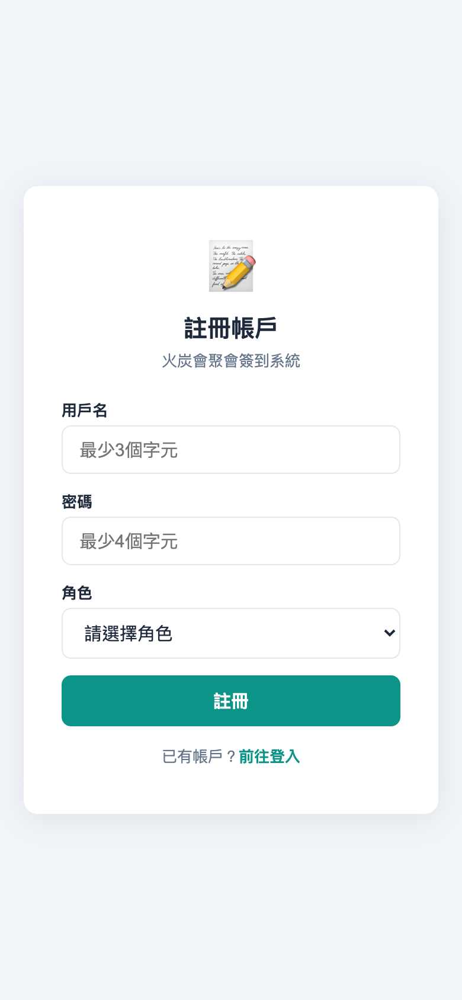

火炭會聚會簽到系統是一個專為商會聚會設計的簽到管理平台，支援手機簽到、多種付款方式、即時統計。
主頁：https://fotan.techforliving.net 登入：https://fotan.techforliving.net/login.html 後台：https://fotan.techforliving.net/admin進入主頁後，底部 tab 預設顯示「未簽到」名單。所有人按 A-Z 排列，顯示姓名、付款狀態、枱號。
主頁-未簽到
點擊人名 → 若已付款則彈出確認框 → 按「✓ 確認」完成簽到。
若未付款，點擊後會顯示付款頁面，包含：

付款頁面
付款確認後，顯示「多謝光臨」及枱號資訊。
底部 tab 切換至「已簽到」，查看所有已完成簽到的人員。

已簽到名單
在「已簽到」tab 點擊任何人，彈出個人資料卡：

個人資料卡
| Tab | 功能 |
| 👥 未簽到 | 顯示尚未簽到的人員 |
| ✅ 已簽到 | 已簽到名單，點擊查看個人資料卡 + vCard |
| 📋 流程 | 節目時間表 + 主席的話 |
| 🏅 委員 | 委員介紹 |
| 🎮 遊戲 | 遊戲資訊 |
| ℹ️ 關於 | 火炭會介紹 + 申請入會連結 |
用戶可通過 /login.html 登入系統。

登入頁
新用戶可通過 /register.html 註冊帳戶，需等待管理員批核後方可使用。

註冊頁
| 方式 | 說明 |
| PayMe | 點擊直接跳轉 PayMe 付款 |
| Alipay HK | QR Code 掃碼付款 |
| FPS 轉數快 | QR Code + 收款電話，支援銀行 App 掃碼 |
| 上傳憑證 | 截圖上傳由管理員確認 |
1. 未付款者：點擊後直接跳轉付款頁面，必須完成付款方可簽到
2. 已付款者：點擊後彈出確認框，確認後立即簽到
3. 免費嘉賓：直接簽到，無需付款